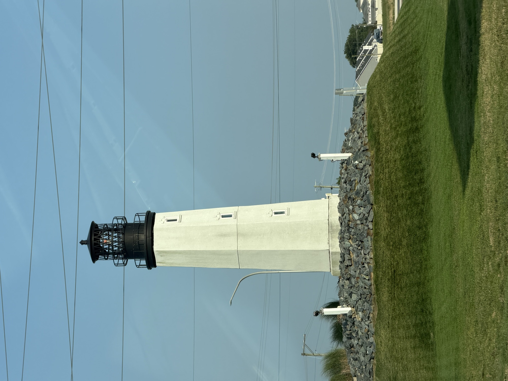

Somewhere east of Cape Henlopen point, most days and most nights of the year, a person climbs a rope ladder up the side of a moving ship.
The ship is often enormous — a tanker, a container vessel, a car carrier — and it does not stop. It slows, turns to make a lee, and holds course while a launch comes alongside and matches its speed. The pilot steps across, climbs, and goes to the bridge. From that moment the master of the ship, who may have brought it across an ocean, hands over the conduct of his vessel to a stranger who came aboard from a small boat in the dark.
This has been happening in Delaware Bay since 1650.
Why the bay needs a local
Delaware Bay looks generous on a map and is not. It is broad, shallow in great stretches, and shoaled in ways that do not announce themselves. The navigable route to the ports upriver — Wilmington, Philadelphia, the refineries along the New Jersey shore — is a dredged channel threaded through all of that, and it bends.
A modern bridge has electronic charts, GPS and radar, and none of that is the point. The point is that the channel is a working environment with traffic in it, currents that set across it, dredges and tugs and fishing boats operating in it, ice in some winters, fog in many mornings, and a bottom that shifts. What a pilot brings is not a better chart. It is having done it several hundred times, in this water, on this tide, at this state of the wind, in a ship of roughly this size.
That is why the law puts them there. In 1789 the first United States Congress left pilotage regulation to the states, and the states have set the rules ever since. Delaware legislated a modern framework in 1881, creating a board of commissioners to license pilots and settle disputes. Under those regimes, vessels in foreign trade entering the bay take a licensed pilot aboard. It is not a service a shipping company chooses. It is a condition of coming in.
The association, and a room in Lewes
For most of the nineteenth century, Delaware pilotage was competitive in an almost predatory way. Pilot boats raced seaward to reach inbound ships first, because the pilot who got there first got the job. That meant schooners standing far offshore in bad weather, waiting.
On November 28, 1896, the Delaware Bay and River pilots met at the office of F. C. Maull in Lewes and organised themselves. At the inaugural meeting that December there were seventy-five pilots; the new association counted ninety-two pilots and twelve apprentices. It remains one of the oldest state pilot organisations in the country.
What the association did, in effect, was end the race. Pooling the work meant a pilot no longer had to risk a schooner in a gale to earn the ship.
The boats themselves are worth a moment. The Thomas Howard, built in 1870, was just under eighty feet. The Thomas F. Bayard, 1880, was eighty-six. These were sailing vessels whose job was to remain at sea off the capes in whatever weather arrived, so that a man could be put aboard an incoming ship. Steam came later, and the steam pilot boat Philadelphia after that.
What the job is now
Today the pilots run out of a headquarters at Lewes, just west of the ferry terminal, and go to work in launches rather than sailing schooners standing off for days. The boarding area is east of the Cape Henlopen point — the same water, for the same reason.
The licensing is still slow on purpose. Historically a Delaware pilot served a four-year apprenticeship before sitting the examination, and the profession has kept that shape: an extended period learning one body of water under people who already know it, rather than a credential earned elsewhere and carried in.
It is worth being precise about what has and has not changed. The technology on the bridge is unrecognisable from 1896. The dredged channel is deeper and the ships are far larger. But the moment the whole system turns on — a launch alongside a moving hull, a ladder, a person climbing — is essentially the same physical act it was when the boats had sails. Nobody has found a way to automate stepping onto a ship at sea.
The oldest continuous job on this coast
Piloting on the Delaware is usually dated to 1650. That is a striking number to sit with.
In 1650 the colony on this river was New Sweden. Fort Christina was twelve years old. The Dutch had not yet taken it, the English had not yet taken it from the Dutch, and William Penn would not be given the Lower Counties for another thirty-two years. Delaware did not exist, as a name or an idea.
The ships needed someone who knew the water then, and they need someone who knows the water now. Governments changed four times over that ground. The job did not.
There is a decent argument that pilotage is the most continuous working tradition on the Delaware coast — older than the state, older than the country, older than every institution a Delawarean can name.
From the beach
You can watch a piece of this from shore. Stand at Cape Henlopen and look east and you will see ships standing off, waiting or making their turn inbound. Take the ferry across and you will pass through the working end of it. The launches come and go from Lewes all day.
What you will not see from the beach is the transfer, which happens far enough out and often enough at night that it stays private. That seems about right. The most consequential thing that happens to a ship on this coast is a person climbing a ladder in the dark, and almost nobody watches it.
Sources: The Pilots' Association for the Bay and River Delaware; reference accounts of the association's founding on 28 November 1896 at Lewes, its membership at organisation, its historic pilot boats and the four-year apprenticeship; the 1789 federal act leaving pilotage regulation to the states; Delaware's 1881 pilotage legislation establishing a board of commissioners. The date of 1650 for the beginning of pilotage on the Delaware is the figure given in standard accounts of the association's history; no contemporaneous record is cited for it and it should be read as the traditional starting date rather than a documented first voyage. Distances to individual upriver ports are not given here because the sources consulted did not state them consistently.